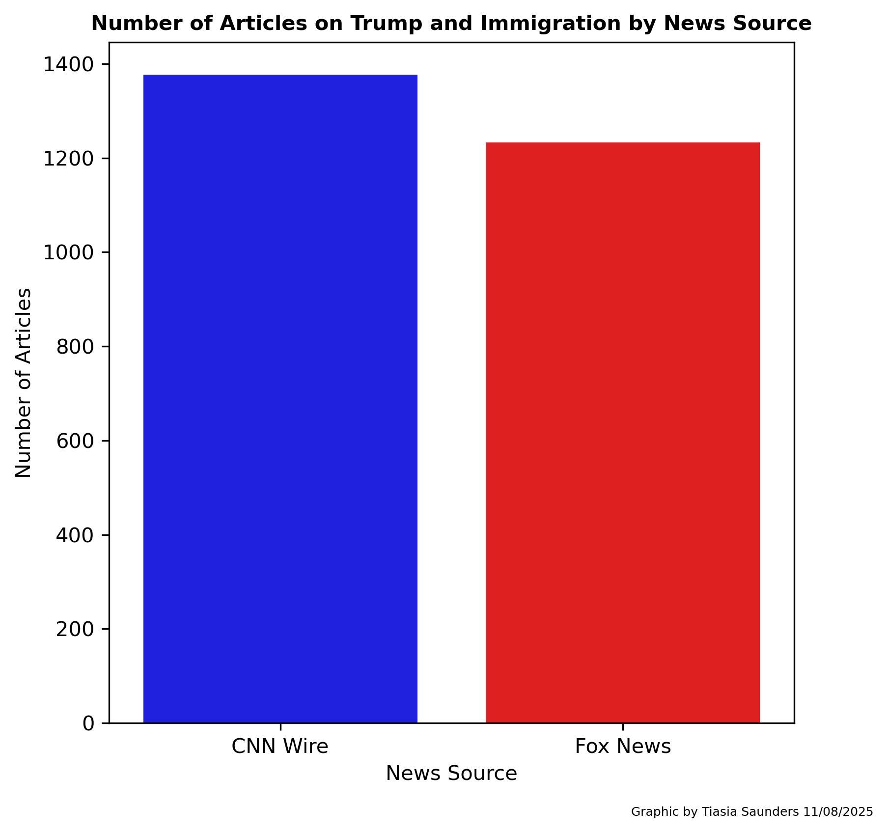
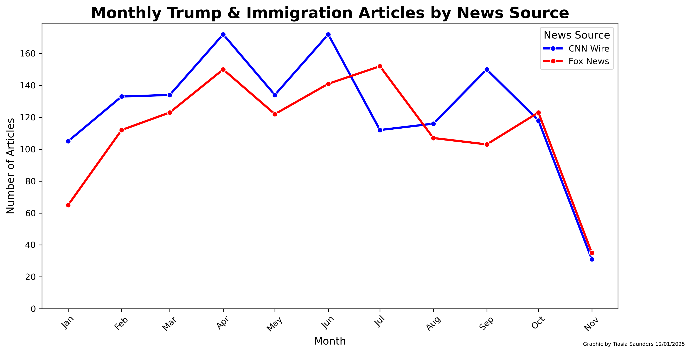
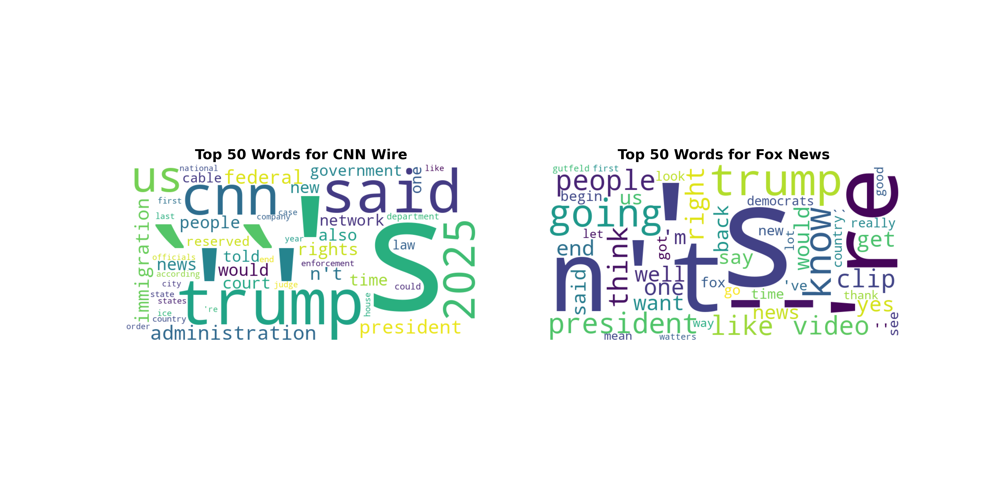
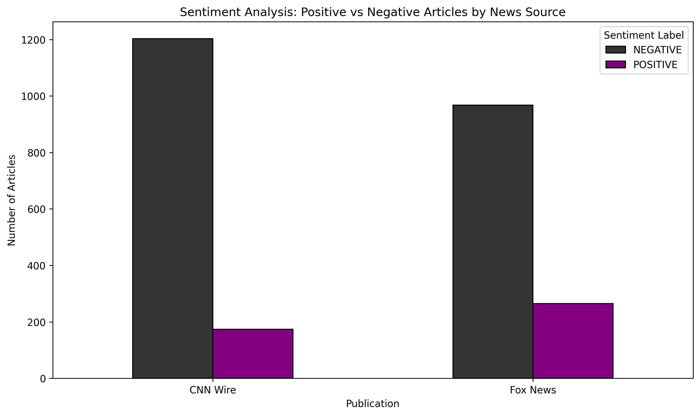
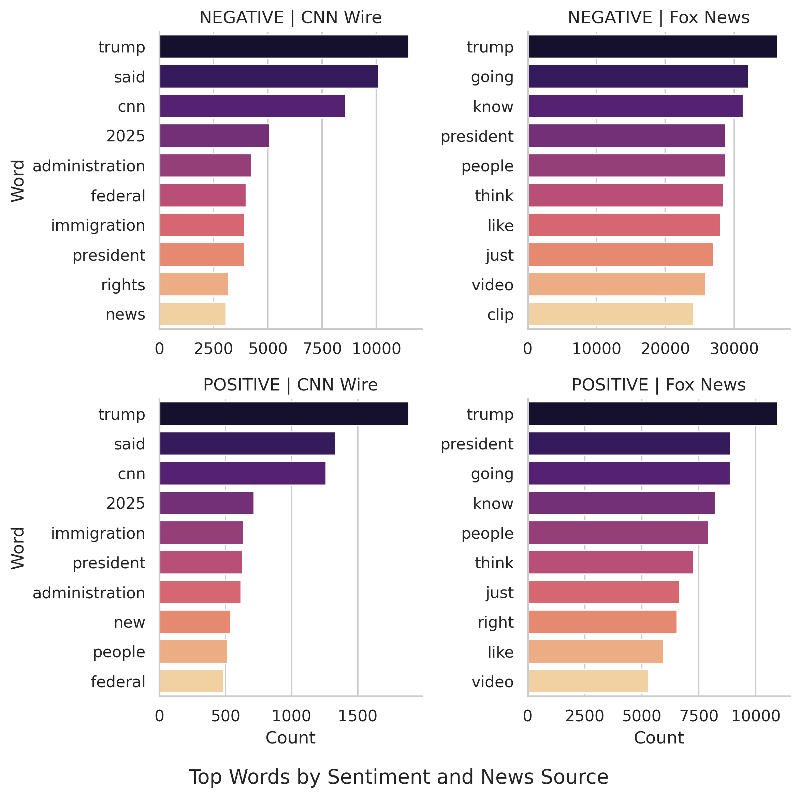
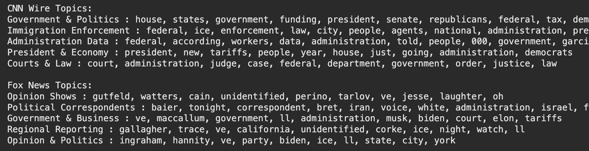
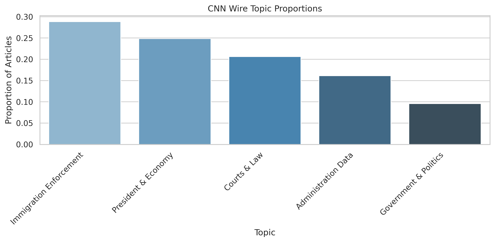
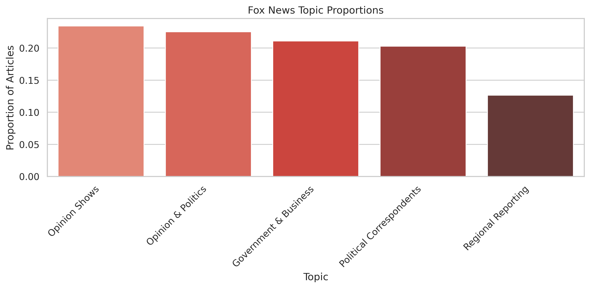

This topic focuses on national and state political activities, including legislation, government funding, presidential actions, and congressional affairs. Keywords include: house, states, government, funding, president, senate, republicans, federal, tax, democrats.
This topic captures news related to immigration policies, ICE enforcement, and legal proceedings around immigration. Keywords include: federal, ice, enforcement, law, city, people, agents, national, administration, president.
This topic covers government reports, administrative data releases, and workforce statistics. Keywords include: federal, according, workers, data, administration, told, people, 000, government, garcia.
This topic focuses on presidential decisions affecting economic issues such as tariffs, economic policy, and government programs. Keywords include: president, new, tariffs, people, year, house, just, going, administration, democrats.
This topic includes judicial actions, court rulings, and legal matters involving the federal government. Keywords include: court, administration, judge, case, federal, department, government, order, justice, law.
This topic captures coverage from opinion-driven shows and hosts, reflecting commentary on current events. Keywords include: gutfeld, watters, cain, unidentified, perino, tarlov, ve, jesse, laughter, oh.
This topic includes reporting from political correspondents on domestic and international issues. Keywords include: baier, tonight, correspondent, bret, iran, voice, white, administration, israel, federal.
This topic focuses on intersections between politics, government policy, and business developments. Keywords include: ve, maccallum, government, ll, administration, musk, biden, court, elon, tariffs.
This topic highlights localized news coverage in specific regions, including local politics and events. Keywords include: gallagher, trace, ve, california, unidentified, corke, ice, night, watch, ll.
This topic combines political commentary and opinion, often reflecting partisan perspectives. Keywords include: ingraham, hannity, ve, party, biden, ice, ll, state, city, york.

